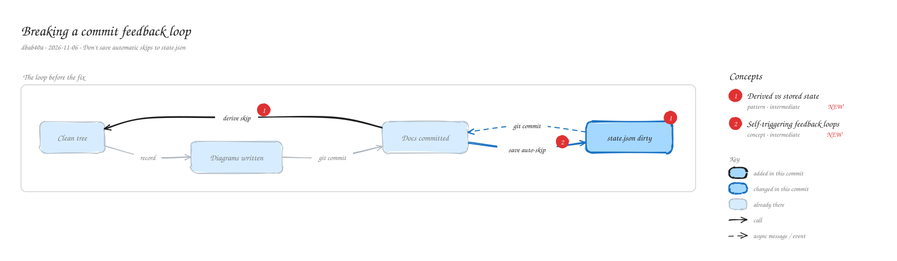
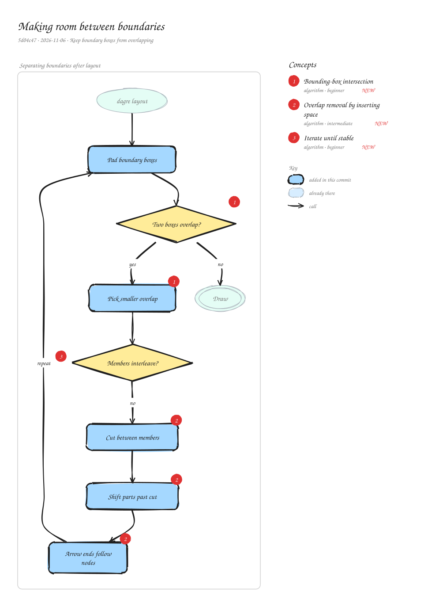
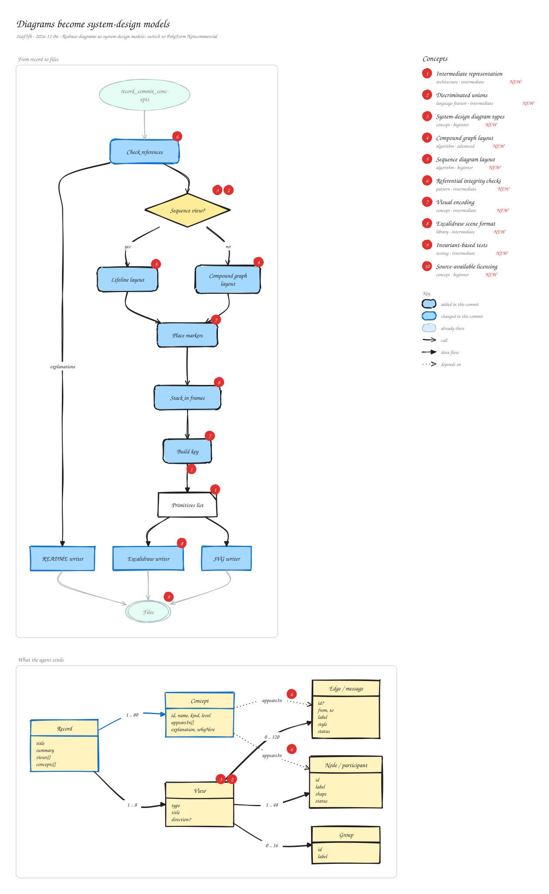
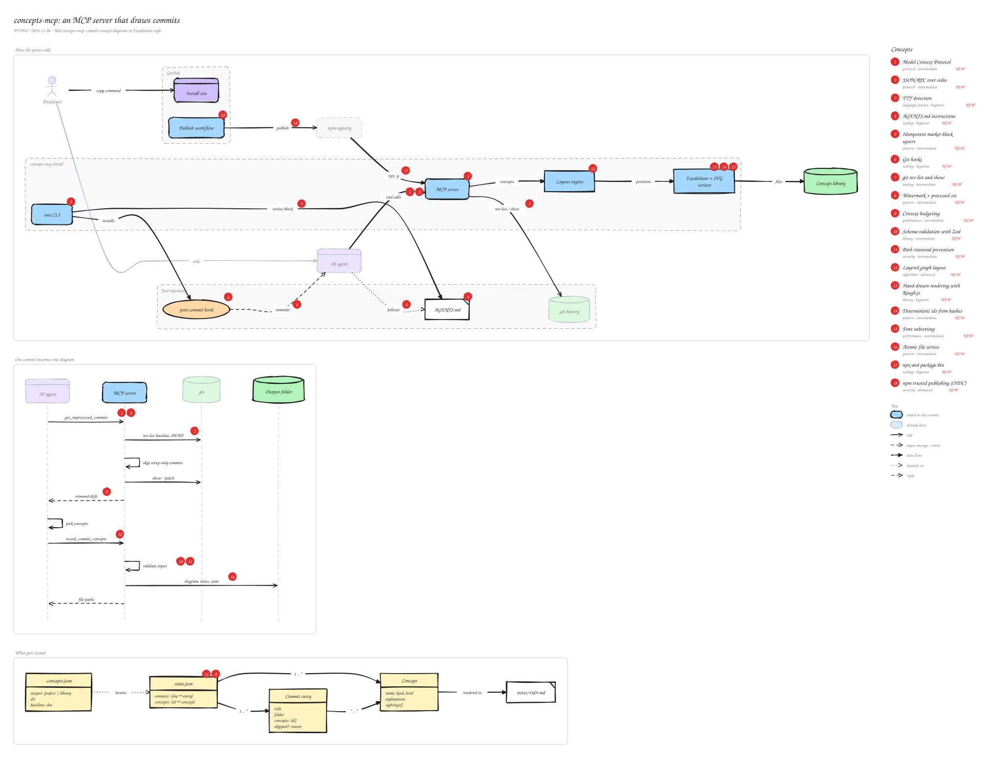

Breaking a commit feedback loop
Automatic skips are now derived from each commit’s files instead of saved, so diagram commits stop creating new work.
Derived vs stored state · Self-triggering feedback loops
Every commit to Concepts, diagrammed by the tool it builds. Open one to see what changed and what it teaches.

Automatic skips are now derived from each commit’s files instead of saved, so diagram commits stop creating new work.
Derived vs stored state · Self-triggering feedback loops

After layout, colliding boundary boxes get space inserted between them, repeated until nothing overlaps.
Bounding-box intersection · Overlap removal by inserting space · Iterate until stable

The agent sends shaped views marked new, changed or existing; explanations move out of the picture into the README.
Intermediate representation · Discriminated unions · Compound graph layout · +7 more

An agent talks to a local MCP server over stdio, which reads git, validates, lays out and writes the diagrams.
Model Context Protocol · JSON-RPC over stdio · Git hooks · +15 more
Each one links to its note, which collects every commit where it showed up.
Bounding-box intersection, compound graph layout, iterate until stable, layered graph layout, overlap removal, sequence diagram layout
Atomic file writes, derived vs stored state, deterministic ids, idempotent upsert, referential integrity, watermark + processed set
Self-triggering feedback loops, source-available licensing, system-design diagram types, visual encoding
Excalidraw scene format, Rough.js, Zod schema validation, discriminated unions, TTY detection
Model Context Protocol, JSON-RPC over stdio, npm trusted publishing, path traversal prevention, context budgeting, font subsetting, intermediate representation, invariant-based tests